UDN
Search public documentation:
BreakAwayExampleKR
English Translation
日本語訳
Interested in the Unreal Engine?
Visit the Unreal Technology site.
Looking for jobs and company info?
Check out the Epic games site.
Questions about support via UDN?
Contact the UDN Staff
日本語訳
Interested in the Unreal Engine?
Visit the Unreal Technology site.
Looking for jobs and company info?
Check out the Epic games site.
Questions about support via UDN?
Contact the UDN Staff
해부해서 보기의 예
문서 요약: 이 문서에서는 하나의 장면을 만들어내기 위해 여러가지 Unreal 요소들을 결합하는 방법을 시각적인 설명으로 보여줍니다. 문서 변경 내역: 최종 업데이트 Jason Lentz (DemiurgeStudios?) – 새로 작성함. 원저자 Jason Lentz (DemiurgeStudios?).
서론
이 예에서 참조하는 맵은 런타임 빌드에 부속되어 있는 EM_Runtime 맵입니다. 이 문서에서는 따로따로 해부한 이미지들을 사용하여, 런타임 맵의 여러 다른 요소들이 어떻게 짜맞추어졌는지 보여드립니다. 이것은 Unreal Engine 을 처음 사용하는, 그것으로 어떤 일들을 할 수 있는지 보고 싶고 모든 일들이 어떻게 함께 작용하는지 궁금한 이들에게 아주 훌륭한 문서입니다. 이 문서에서는 각 효과의 모든 국면들을 설정하는 것에 대해서는 자세히 다루고 있지 않기 때문에, 그런 것들을 자세히 다룬 다른 페이지들로의 링크를 포함했습니다. 런타임 빌드 및 맵을 다운로드 하려면 아래의 링크를 클릭하십시오: http://udn.epicgames.com/pub/Powered/UnrealEngine2Runtime/작업 순서
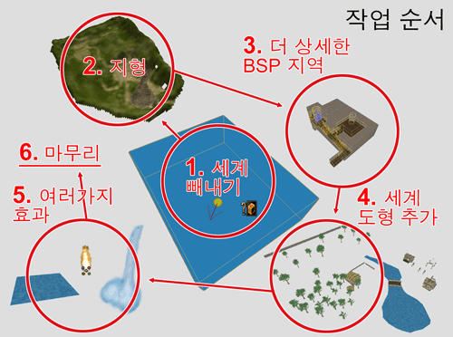
레벨의 작성 과정은 다음과 같이 6 단계로 나눌 수 있습니다:- 1 커다란 세계용 BSP 영역 빼내기
- 2 지형을 첨가하고 대충 모양 만들기
- 3 제2의 BSP를 첨가한 다음 영역들로 빼내기
- 4 세계 도형 추가하기
- 5 물과 그밖의 효과 추가하기
- 6 모든 것의 끝마무리 (사운드, 특수 소재, 조명 개선)
세계 공간 빼내기
물론 레벨을 디자인하는 것이 0순위 단계입니다. 그러나 일단 무엇을, 어디에, 얼마나 크게 만들 것인지 파악하고 나면, 세계 공간을 빼낼 준비가 다 된것입니다. 필요한 공간의 크기를 잘못 판단하면 나중에 더 빼내야 하게 되는데, 이것은 바람직하지 않습니다. 그러므로 자신이 없을 경우에는, 크기를 너무 작게 하는것보다는 더 크게 하는 것이 차라리 더 낫습니다. 공간을 빼낸 다음에는 3가지 할 일이 더 있습니다. 면들이 반드시 Fake Backdrop (거짓 배경) 이 되도록 설정하고, SunLight 액터를 추가한 다음, ZoneInfo 를 설정합니다. 지금 이 시점에서 기입해야 할 필드는 오직 bTerrainZone = True 와 일종의 AmbientBrightness 뿐입니다. bDistanceFog = True 로 설정하는 것도 좋겠지만, 이것은 나중에 하도록 하겠습니다. 작업을 보다 쉽게 하기 위해 맨 마지막으로 할 일은, DrawScale 을 10이나 20 등급 정도로 올려서 레벨에서 찾기 쉽도록 하는 것입니다. 이것은 다만 아이콘의 크기를 변경하는 것이므로 에디터에서만 눈에 띄는, 순전히 표면적인 기능입니다. 기초 세계 공간 설정에 관해 더 아시고 싶으면 Unreal Ed 소개? 문서를 참고하십시오.대강의 지형 추가하기
런타임 맵 작성의 다음 과정으로서 대강의 지형이 추가되었습니다. 이 단계에서는 레벨 전체의 레이아웃이 신속하게 설정되고 모든 것이 올바른 비율로 되어 있는지 시험했습니다. 먼저 메모리를 절약하기 위해 64x64 크기의 지형을 사용한 다음, 비율 감각을 얻기 위해 나무와 빌딩의 위치 지정자 모델들을 배치했습니다.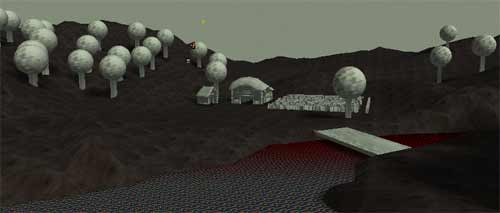
제 2 의 BSP 영역 첨가/빼내기
레벨 전체의 조경에 대한 대강의 레이아웃이 설정된 다음, 보다 세밀한 지하 BSP 섹션이 추가되었습니다. 이것은 그 자체가 여러 단계로 이루어지는 과정인데, 가장 중요한 부분은 이것이 지형 위로 튀어나오지 않고 그밑에 꼭 맞도록 설정하는 것입니다. BSP 공간에 대해서는 아래 에서 더 자세하게 설명하겠습니다. 이 단계에서는 또한 세계 전체에 더 나은 현장 감각을 주기 위해 관람석도 추가되었습니다.세계 도형 추가하기
플레이어가 다닐 수 있는 공간들이 모두 짜여지면, 더 복잡한 레벨 도형이 추가되어 이 장면에 살을 붙입니다. 흔히 이 단계에서는 특별 섹션에 특별한 것이 필요해짐에 따라 작업이 아티스트와 레벨 디자이너 사이를 상당히 여러 번 왔다갔다 하게 됩니다.물과 그밖의 효과 추가하기
이제 모든 종류의 특수 효과들이 추가됩니다. 레벨에 폭포, 흐르는 물, 밀과 나뭇잎이 흔들리게 하는 특수 소재, 그늘 및 횃불이 추가됩니다. 여기서도 이전 단계에서처럼 작업이 아티스트와 레벨 디자이너 사이를 여러 번 왔다갔다 해야 할 것입니다.마무리 하기
마지막이지만 중요하기로는 절대 다른 어느 단계에 뒤지지 않는 것이 끝마무리입니다. 이것은 모든 것들이 꾸며진 다음에 다시 검토해보고 더 낫게 만드는 과정입니다. 애당초 레벨이 잘 디자인 되어 있다면 크게 손봐야 할 것은 없을 것입니다.BSP 공간 작성
 아주 오래 전에는 레벨 전체가 완전히 BSP 로 구성되었습니다. 지금은 다릅니다. 아직도 영역의 설정, 일반적인 세계 공간, 그리고 BSP 표면이 요구되는 일부 특수 효과에 BSP 가 필요하기는 합니다. 그러나 플레이어가 보게되는 주 세계 공간은 정적메쉬로 만들어져야 합니다. 이 섹션에서는 EM_RunTime 맵에서 지하 지대가 어떻게 설정되었는지 설명하겠습니다.
아래의 해부된 이미지는각각 배치되어 있는 섹션 위로 도드라진 StaticMesh, Mover, Light, 그리고 Emitter 액터로 BSP 지역이 나누어진, 각 영역을 보여줍니다.
아주 오래 전에는 레벨 전체가 완전히 BSP 로 구성되었습니다. 지금은 다릅니다. 아직도 영역의 설정, 일반적인 세계 공간, 그리고 BSP 표면이 요구되는 일부 특수 효과에 BSP 가 필요하기는 합니다. 그러나 플레이어가 보게되는 주 세계 공간은 정적메쉬로 만들어져야 합니다. 이 섹션에서는 EM_RunTime 맵에서 지하 지대가 어떻게 설정되었는지 설명하겠습니다.
아래의 해부된 이미지는각각 배치되어 있는 섹션 위로 도드라진 StaticMesh, Mover, Light, 그리고 Emitter 액터로 BSP 지역이 나누어진, 각 영역을 보여줍니다.
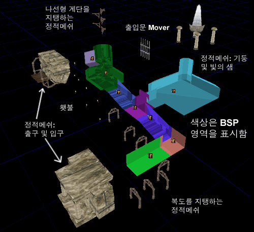
영역 설정하기
영역은 한 지역에서 다른 지역으로의 시야를 차단하는 각 구석 또는 공간에 간단하게 설정됩니다. 따라서 여러분이 서 있는 영역, 구석을 위한 영역, 구석에 숨겨져야 할 또 하나의 영역의 차례로 영역이 만들어지게 됩니다. 레벨을 장식하기 위해 사용할 정적메쉬를 넣는 영역들이 서로 가까이 있을수록 좋습니다.지형에 연결하기
EM_RunTime 맵의 BSP 지역은 지하이기 때문에 이것을 지형에 연결하는데는 특별한 주의가 필요합니다. 이 작업을 위해서는 메쉬를 신중하게 배치하고, 신중하게 영역을 잘라내야 합니다. 아래의 그림에서는 입구가 어떻게 짜맞추어졌는지 볼 수 있습니다.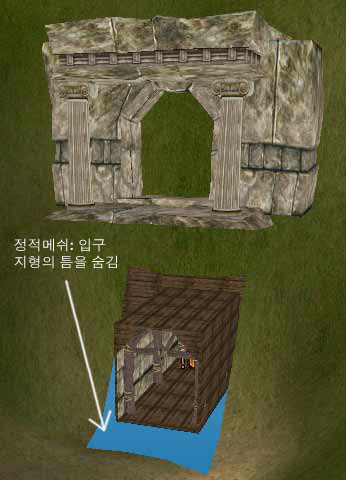
BSP 지역에 있는 나선형 계단 맨 위의 출구에 대해서도 같은 기법이 사용됩니다. 정적메쉬와 지형 그리고/또는 BSP 바닥 사이를 매끄럽게 이행하려면 차단 볼륨이 필요하다는 것도 알아채셨을 것입니다.BSP 의 이점
모든 것에 BSP 를 사용하는 것은 더 이상 실용적인 옵션이 아니지만 (다루기 힘들뿐만 아니라 정적메쉬처럼 빠르게 렌더되지 않기 때문), BSP를 사용하는 것이 유리한 점도 많이 있습니다. 영역 설정에 사용하면 좋다는 것 외에 가장 뚜렷한 이점 가운데 하나는, 이것이 조명을 처리하는 방법입니다. 조명을 재빌드할 때 이는 빛을 차단할 수 있는 도형을 모두 고려하여 광원으로부터 모든 BSP 표면에 그 조명을 ray trace (광선 추적) 하여, 아주 멋진 조명을 만들어냅니다.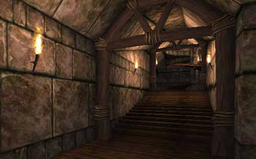
BSP 의 또 한 가지 이점은 이것이 정적메쉬 도형보다 훨씬 빠르게 충돌을 계산한다는 점입니다. 이 점 때문에, 정적메쉬가 벽, 천장 및 그밖에 환경의 다른 세세한 항목들을 작성하는데 쓰이는 한편 BSP는 흔히 바닥을 만드는데 사용됩니다.BSP 편집 도구 및 사용된 기법
이 BSP 섹션의 작성 과정에는 다양한 종류의 기본적인 임시 빌더 브러쉬들이 사용되었습니다. 이 방법은 디자인을 모듈식으로 유지할 경우 매우 효과적이어서, 기본 빌더 브러쉬로부터 재사용할 수 있는 것들을 최대한으로 얻을 수 있습니다. EM_RunTime 맵에서 BSP 섹션에 사용된 기본 빌더 브러쉬는 아래와 같은 순서로 작성된 복도 부분입니다: 이렇게 만들어진 브러쉬는 새 브러쉬와 교차된 다음 세계에 추가되어, 나중에 교차로, 비탈진 복도,그리고 모퉁이 등을 만드는데 사용됩니다(아래 그림에서처럼).
이렇게 만들어진 브러쉬는 새 브러쉬와 교차된 다음 세계에 추가되어, 나중에 교차로, 비탈진 복도,그리고 모퉁이 등을 만드는데 사용됩니다(아래 그림에서처럼).
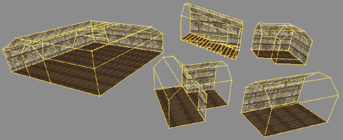
위의 섹션들은 기본 복도 부분을 이용해 만든 새 브러쉬들의 교차 및 비교차의 결합, 그리고 정점 편집 도구를 사용해서 수동으로 특정 면을 선택한 다음 알맞은 곳으로 옮김으로써 작성되었습니다. 이 모듈식이고 점증적인 BSP 디자인은 BSP 기반의 섹션을 변경하는 일과 기본 부분을 기반으로 새 방을 추가하여 지역을 확장하는 일을 한결 쉽게 해줍니다. 사실상 EM_RunTime 맵에서 BSP 섹션의 모든 부분이 위에서 설명한 방법으로 작성된 하나의 기본 복도 부분을 바탕으로 한 것입니다.BSP 홀
BSP 홀(갈라진 틈)은 원인을 찾아 해결해야 할, 끔찍하고 귀찮은 문제점입니다. 따라서 최선의 방법은 레벨에 이것이 절대로 발생하지 않도록 하는 것입니다. 저는 이 BSP 홀을 방지하기 위해 다음과 같은 요령 및 지침을 따랐습니다.- grid snap(그리드 스냅) 을 항상 유효화한다
- 모듈 단위로 작업한다 (예: 256 x 256 x 256 블록)
- BSP 도형을 가능한 한 단순하게 유지한다
- BSP 브러쉬의 회전을 삼가한다
- BSP 브러쉬를 회전해야만 하는 경우에는, 단 한 번만 회전하고 회전 그리드를 바꾸어 원하는 각도에 스냅되도록 한다
- BSP로 작업할 때는 레벨 테스트 및 백업을 자주 한다
그밖의 BSP 참조
위의 여러가지 주제에 대한 상세한 정보를 원하시면 다음 문서들을 확인하십시오: 또 UT2K3 맵을 살펴 보는 것도 전문적인 제품에서 영역 문제가 어떻게 다루어지고 있는지 확인하는 좋은 예가 될 것입니다.그림자 있는 나무의 설정
Unreal 로 하여금 정적메쉬 도형에 대한 기본 그림자를 던져 그 도형에 의해 드리워진 그림자를 대충 광선추적 하도록 할 수 있습니다. 아니면 메쉬의 bCastShadow 를 False 로 설정하고 더 섬세한 고유의 그림자를 만들 수 있습니다.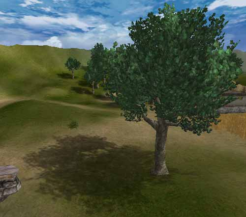
다음 그림은 EM_RunTime 맵에서 그림자 뿐만아니라 잎까지 흔들리도록 나무가 설정된 방법을 보여줍니다.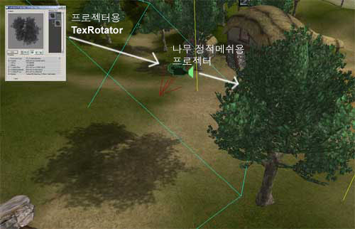
나무에 사용된 기본 정적메쉬
EM_RunTime 의 나무들에는 단 1개의 나무 메쉬가 사용되었습니다. 이 메쉬의 키는 대략 890 단위이고, 820개의 삼각형이 있으며 4개의 소재가 (가지/잎 텍스처 2개, 나무껍질 1개, 그리고 나무 껍질용 디테일 텍스처 1개) 할당되었습니다. 서로 다르게 보이는 비슷한 종류의 나무들을 많이 만들되 똑같은 것을 피하기 위해, 나무의 각 복사본의 크기를 조절하고 다르게 회전하여 두드러지게 눈에 띄는 패턴이 없도록 했습니다. 이 방법이 효과가 있으려면, 기본 메쉬에도 불규칙성 가운데 뭔가 규칙성이 있어야 합니다. 다시 말해서 정말 특색있게 튀어나온 가지가 있어서는 안됩니다. 그런 가지가 있다면 회전하거나 크기가 조정된 뒤에도 그 가지가 눈에 띄게되어 눈속임에 실패하게 됩니다.
서로 다르게 보이는 비슷한 종류의 나무들을 많이 만들되 똑같은 것을 피하기 위해, 나무의 각 복사본의 크기를 조절하고 다르게 회전하여 두드러지게 눈에 띄는 패턴이 없도록 했습니다. 이 방법이 효과가 있으려면, 기본 메쉬에도 불규칙성 가운데 뭔가 규칙성이 있어야 합니다. 다시 말해서 정말 특색있게 튀어나온 가지가 있어서는 안됩니다. 그런 가지가 있다면 회전하거나 크기가 조정된 뒤에도 그 가지가 눈에 띄게되어 눈속임에 실패하게 됩니다.
그림자 프로젝터
그림자를 좀더 정교하게 설정하기 위해서 프로젝터가 나무 메쉬와 함께 사용됩니다. 이를 위해서는 특별한 추가 텍스처의 작성이 요구됩니다. 이 텍스처를 작성하려면 레벨에서 나무의 스크린샷을 취하고 채도를 낮춘 다음, 고급 조명 견본 맵? 문서에서 설명한대로 임포트합니다. EM_RunTime 맵에서는 태양이 매우 가파른 각도에 있어서 그림자가 바로 그 밑에 있는 것처럼 가깝습니다. 그래서 나무의 잎이 흔들리는 것과 마찬가지로 잎의 그림자도 흔들리는 효과를 위해 미세하게 앞뒤로 진동하는 간단한 TexRotator 가 사용되었습니다. 다음 섹션에서는 어떻게 잎이 흔들리도록 했는지 간단히 설명합니다.잎을 위한 특수 소재
나무가 더 생동감 있고 현실 세계에 있는 것처럼 보이도록 하기 위해, 잎에는 바람이 계속해서 지나가는 것처럼 미세하게 흔들리는 동작이 있습니다. 이 효과에 필요한 것은 TexOscillator 뿐입니다. 다음과 같은 속성들을 가진 잎 텍스처의 기초 텍스처가 TexOscillator 내에 전달됩니다: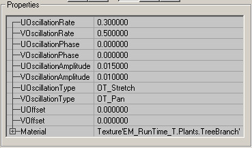
그러면 StaticMesh 브라우저에서 새 TexOscillator 가 나무 정적메쉬에 배정되어 모든 나무가 흔들리는 잎을 가지게 됩니다.횃불 조립하기
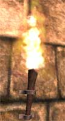
EM_RunTime 맵에서 횃불은정적메쉬, 불 에미터, 광원, 그리고 AmbientSound 의 4부분으로 이루어집니다.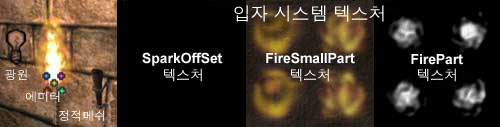
AmbientSound 는 단순화를 위해 불 에미터의 Sound 속성에서 설정되었습니다-이렇게 하면 횃불의 설정을 복사하거나 이동할 필요가 있을 때 선택해야 하는 객체의 수가 하나 줄어듭니다. 광원은 실제로 벽에서 약간 떨어져 분명한 빛의 소스가 되도록 별도의 액터로 남겨두는 것이 좋습니다.물론 에미터와 정적메쉬는 별도의 액터들이어야 합니다. 이 횃불의 세트를 조직하는데 유용하게 쓰인 도구는 Groups 브라우저입니다. 횃불을 위한 광원들만으로 된 그룹을 만들어두면 나중에 색조나 밝기를 조절하기 위해 조명을 변경하고 싶을 때 그 그룹에 되돌아가서 하면 됩니다. 계속해서 앞뒤로 몸을 흔드는 숨겨진 mover 를 만들어, 거기에 광원을 모두 한꺼번에 첨부한 다음, 이들의 bDynamicLight 을 True 로 설정하여 깜박이는 불꽃에 맞추어 지속적으로 가물거리는 효과를 만들 수도 있습니다. 광원이 그 자신의 그룹에 있지 않다면, 이 태스크는 광원의 수만큼 훨씬 더 시간이 많이 걸릴 것이며, 그 가운데 하나를 빠뜨릴 가능성이 많습니다. Groups 브라우저의 사용에 관한 자세한 정보는 GroupsBrowser 문서를 참고하십시오. 또 고급 조명 견본 맵? 문서에는 횃불에 추가할 수 있는 멋있는 효과들이 소개되어 있습니다. Fire 에미터 작성 방법을 알고 싶으시다면 에미터의 예? 문서에 있는 예를 확인해 보십시오.레벨에 분위기 추가
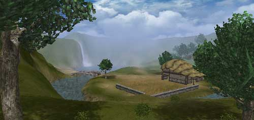
레벨에 분위기를 넣고 사실적인 현장감을 연출하기 위해 사용할 수 있는 도구가 여러가지 있습니다. EM_RunTime 맵에서는, Sun Light, Sky Zone, Distance Fog, 그리고 레벨 위에 흘러가는 구름을 던지는 Projector 가 모두 함께 작용하여 레벨에 분위기 감각을 부여합니다. 다음은 레벨에서 이 각 요소들이 어떻게 설정되었는지에 대한 간략한 설명입니다.
Sun Light (일광)
이 중에서 SunLight 액터가 제일 먼저 레벨에 배치되고 설정되었습니다. 이것은 가장 쉬운 것이지만, SunLight 이 어떻게 설정되는지가 레벨의 다른 많은 면들에 영향을 준다는 것을 알아두는 것이 매우 중요합니다. 예를 들어, 위 에서 언급한 것처럼, 나무의 그림자에 사용된 프로젝터는 SunLight 액터와 회전이 정확하게 일치되도록 정렬됩니다. SunLight 이 분명하게 극적인 영향을 주는 또 한가지는 지형에 의한 그림자 및 하루 중의 시간입니다. SunLight 액터에서 LightColor 필드와 Rotation 설정을 사용하여 레벨의 중요한 부분들이 가려지고 있지 않은지, 빛을 받게하고 싶은 곳이 밝게 비추어지고 있는지 실험해 보아야 할 것입니다.흘러가는 구름
흘러가는 구름을 만드는데 실제로 필요한 것은 구름을 팬하는 텍스처와 레벨 전체에 걸쳐 구름을 드리울 수 있는 커다란 프로젝터가 전부입니다. 더 자세한 설명은 고급 조명 견본 맵? 문서를 참고하십시오. 흘러가는 구름 프로젝터를 설정할 때 주의해야 할 점은, 마스크된 텍스처 및 알파된 텍스처(나무 정적메쉬의 잎 같은), 그리고 아직 프로젝터의 MaxTraceDistance 내에 있는 실내 공간에 나타나는 흠입니다. 이 문제를 해결하는데는 2가지 방법이 있습니다. 요점은 프로젝터가 표면에 드리워지지 않도록 하는 것입니다. 이를 위해서는 다음 기법중 하나를 사용할 수 있습니다:- ProjectTag 설정
- 비협조적 액터에 bAcceptProjectors 설정
- 프로젝터의 bProjectOnBSP/Terrain/StaticMesh 설정
Sky Zone (스카이존)
레벨에 SkyZone 이 있으면 공간 감각을 형성하는데 도움이 됩니다. 물론 SkyZone 을 설정하는데는 몇 가지 다른 방법들이 있습니다. 스카이존 견본 맵? 문서에 소개되어 있는 3가지 다른 SkyZone 의 예를 참고하십시오. EM_RunTime 맵에서는 다음과 같은 방법으로 SkyZones 이 설정되었습니다: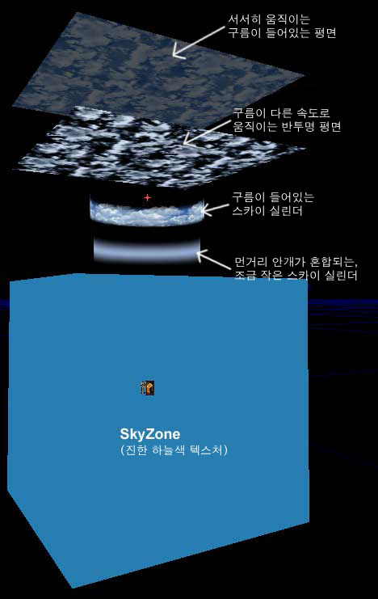
위의 그림에서 보듯이, SkyZone 은 4개의 정적메쉬로 구성됩니다 –또는 두 개의 메쉬가 각각 두 번씩 사용됩니다: 즉 두 개의 실린더와 두 개의 평면입니다. 두 개의 평면은 구름에 더 큰 깊이감을 주기 위해 사용되며 안쪽의 실린더는 Distance Fog (아래에 설명) 에 보다 더 매끄럽게 블렌드하기 위한 것입니다. SkyZone 자체에는 빛의 소스가 없으므로, 각 정적메쉬는 bUnlit = True 로 설정되어 있습니다. SkyZone 이 들어있는 BSP 박스는 단지 진한 하늘색 텍스처입니다. 일단 정적메쉬와 SkyZoneInfo 가 모두 제 자리에 설정되면, SkyZone 을 사용할 준비가 다 된것입니다.